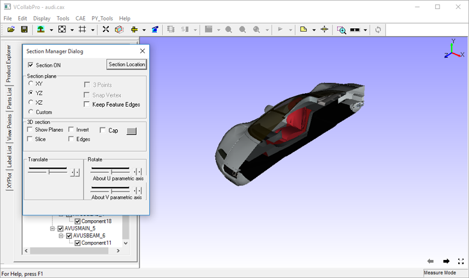
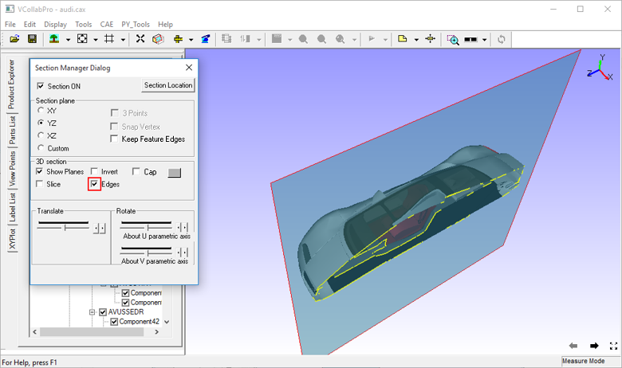

Section
The Section tool found in the Tools menu is used to create sections on a model and view the sectional part.
Section Manager Dialog Panel
Click Tools|Section… to open the Section Manager Dialog box

The various fields and controls seen in the Section Manager Dialog are explained below
| Section ON | Enables section plane. |
| Section Location | Displays primary cut section plane data and allows to edit and apply |
| XY | Displays plane parallel to the XY Plane |
| YZ | Displays plane parallel to the YZ Plane |
| XZ | Displays plane parallel to the XZ Plane |
| Custom | Enables custom options like 3 Points. |
| 3 Points | Enables mouse mode to select 3 points to define and display a plane. |
| Snap Vertex | Allows users to select a vertex nearest to the mouse hit. |
| Show Planes | Shows section planes. |
| Invert | Toggles in clipping either side of prime section of the plane |
| Slice | Allows users to create a secondary section plane which cuts the model on the other side. |
| Edges | Displays intersection lines of the model with the section plane. |
| Cap | Fills a hollow closed region to appear as solid. Capping can be controlled using the Closed Parts option. Section capping is not supported in OPENGL mode (OpenGL version < 1.2) |
| Closed Parts | Closed Parts option is related to the Cap option. If this option is on, the closed part will be capped. If this option is off, capping is attempted for open parts also. The result may not always be valid. |
| Translation Slider Control | Controls the translation of the prime section plane. |
| Rotation - U axis | Rotates the prime and secondary planes about the U parametric axis. |
| Rotation - V axis | Rotates the prime and secondary planes about the V parametric axis. |
Note:
- Section Cap can be used in shaded mode only and not in other display modes.
- Picking / Probing does not work properly in Section Cap mode
- Section Cap does not work in Remote Desktop or OpenGL Mode.
Section Plane Location Panel
The various fields and controls seen in the Section Plane Location panel are explained below.
|
Steps to cut or clip model and view the cut section
- Click File | Open to load a model.
- Click Tools | Section to open the Section Manager dialog box.
- To view cut sections of prime planes, click the corresponding options provided for XY, YZ & XZ planes . For example, YZ is selected in the image below.

- Check Show Planes to view the semi transparent section plane.

- Check Edges to view intersecting edges on the plane.

- Check Invert to change the clipping side.
- Check Slice to add one more cutting plane opposite to the existing one.
Steps to define a custom cutting section or clipping plane
- Click Custom option in the Section Manager Dialog panel
- Check 3 Points.
- Click at 3 different points anywhere in the model.
- Vertex Info option can be used to know the coordinate values of points before clicking.
- A section plane, passing through the clicked points, is defined and clipped as below.

- The points selected for clipping are highlighted in red.
- Snap Vertex can be used to toggle between selection of exact mouse position or nearest vertex.
Steps to translate or rotate the cutting section plane
Use corresponding control sliders to rotate section planes about U and V parametric axes.
Use translation slider control to translate prime plane along the plane’s normal axis.


Steps to get and edit section plane data
- Click Section Plane location in the Section Manager dialog panel.
- It pops up 'Section Plane Location' dialog.
- It displays current primary section plane equation in the form of aX+bY+cZ+d=0. where (a,b,c) is unit normal of th eplane and d refers to the perpendicular distance of the plane from origin.
- User can enter any point coordinates or pick a vertex using Pick button if user want to move the plane to a particular point.
Steps to set unit increment or step size for translation and rotation sliders
- Click Section Plane Location in the Section Manager dialog.
- It pops up Section Plane Location dialog.
- Change Translation and Rotation step sizes provided.
- Click Apply button to set values and reset the slider positions and notice the slider ticks and positions.
- By default, translation slider is split into 100 ticks.
- User can change translation step size from 1 to 100.
- By default, rotation sliders are split into 180 ticks, means each tick refers to one degree.
- User can change rotation step size from 1 to 180.
Section Cap
This option helps to fill the hollow closed region in a model to appear as solid. Enabling Closed parts option applies capping to solid parts only, not to shell models.